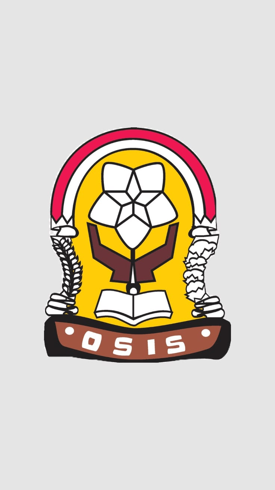

Pengumuman Terbaru
Selamat datang di platform digital resmi OSIS SMU DuMay. Pantau terus informasi kegiatan seru kami di sini!
Agenda Terdekat
- Pekan Olahraga Antar Kelas (Classmeet)
- Pemilihan Ketua OSIS Periode Baru

Organisasi Siswa Intra Sekolah
Bersama kita berkarya, berprestasi, dan menginspirasi.
Selamat datang di platform digital resmi OSIS SMU DuMay. Pantau terus informasi kegiatan seru kami di sini!